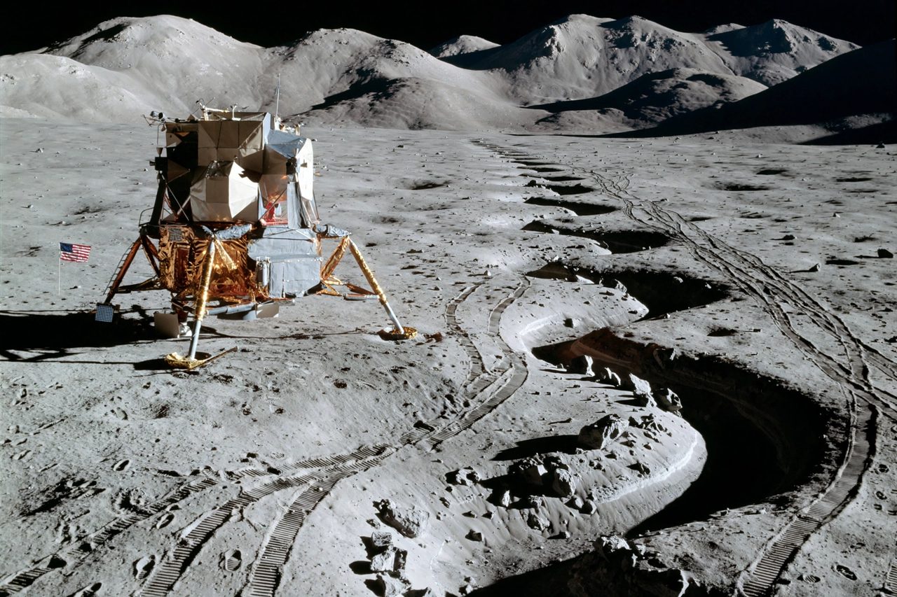

Apollo 15
From Wikipedia, the free encyclopedia
| Apollo 15 | |
|---|---|
| Crew | David Scott, Alfred Worden, James Irwin |
| Launch | 26 July 1971 |
| Landing site | Hadley–Apennine |
| Duration | 12 days |

Falcon at Hadley.Apollo 15 was the ninth crewed Apollo mission and the fourth to land on the Moon, in July–August 1971 — the first of the long-stay 'J' missions. David Scott and James Irwin spent three days at the Hadley–Apennine site, at the foot of the lunar Apennines beside a winding rille, driving the first Lunar Roving Vehicle across 27.8 km of surface while Alfred Worden orbited above conducting the most extensive orbital science survey yet flown.
The mission is often judged the most scientifically productive of Apollo: it returned the 'Genesis Rock' — a 4.5-billion-year-old fragment of the Moon's original crust — mapped the surface with new panoramic and mapping cameras, deployed a scientific instrument module in the service module, and included the first deep-space EVA, by Worden, to retrieve film cassettes on the way home.
Covers scandal
Apollo 15's legacy is shadowed by the postal covers affair: the crew had carried 400 unauthorised stamped envelopes, some sold to a German dealer. The revelation ended the astronauts' flying careers and tightened NASA's rules on personal items — a human footnote to an exemplary mission, and the reason the hammer-and-feather experiment Scott performed on camera is now the flight's most replayed moment.
See also
David Scott (astronaut) · Lunar Roving Vehicle · Apollo program · Fra Mauro formation